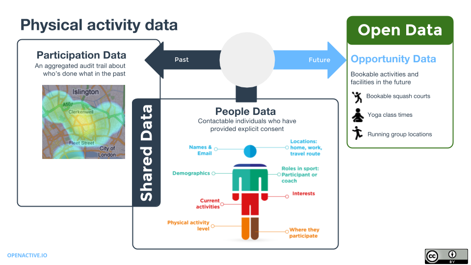
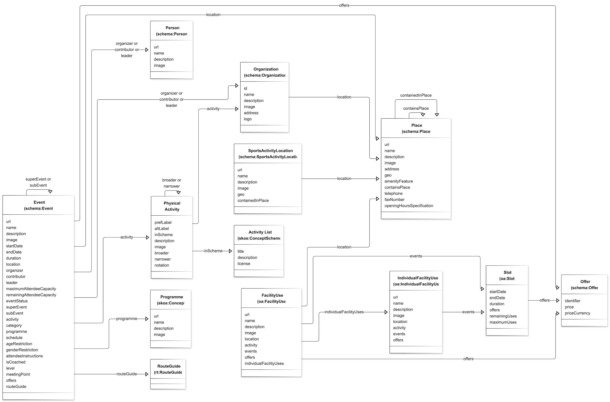

This specification introduces a data model to support the publication of data describing
opportunities for people to engage in physical activities ("opportunity data"). This model
covers description of activities, as well as the events and locations in which they take place.
The specification is intended to support the publication of opportunity data as open data
for anyone to access, use and share. It will also guide reusers of opportunity data,
introducing them to the key concepts relevant to that sector.
To empower organizations at different stages of their digital journey, this specification supports three levels of open data publication:
Organizer (or 'Club') Level
This level is ideal for organizations or activity providers who don’t manage sessions online, but want to boost their discoverability
and attract new participants. Start simply by publishing essential information like your name, location, contact details and the activities you provide.
Listings – Sessions, Series, Facilities and Slots
At this intermediate level, publishers include individual session listings or facility slots with scheduled dates and times.
The specification describes how to list recurring or one-off sessions, courses, open days, or timed slots for facilities.
Bookable Sessions and Facilities
The level offers frictionless online booking directly from search or partner platforms, via opportunity data feeds and the Open Booking API.
Organizations with OpenActive-enabled booking systems can publish real-time session and slot data complete with direct booking links, so participants can instantly reserve their place.
The specification is an output of the OpenActive Community Group
and serves as a common reference point for other specifications and outputs of that activity.
The model may also be useful in guiding the development of both new and existing booking
systems and applications that consume opportunity data.
Developers looking for a quick primer on the model and how to use it to structure opportunity data may want to refer to the
Developer site which provides guidance and examples.
The data model introduced in this document has been mapped to existing standards and vocabularies, including
SKOS ([skos-primer]) and the Schema.org ([SCHEMA-ORG]) types and properties. This existing work provides a
useful framework around which the
OpenActive Community Group can build additional data standards.
Contributions to this document are not only welcomed but are actively solicited. Please add any solutions, comments, or improvements you might have via GitHub Issues
and pull requests. The source code is available on GitHub.
The W3C OpenActive Community Group was
established with the objective of facilitating the sharing and use of
physical activity data. Open publishing of this data has enormous potential to increase
participation in physical activities.
1.1 Categories of Physical Activity Data
A wide range of data can be relevant to physical activities, from across the the data spectrum.
Some of this data can be open data. Open data is data that anyone can access, use and share.
All of the following types of data can be published as open data:
descriptions and lists of physical activities
details of the locations and venues at which activities or events takes place
the facilities available at those locations
the details of event involving physical activities e.g. when and where they will take place, restrictions
on attendance, costs, etc
any related information, e.g. about the format of the event, its organizers, etc
Collectively we call this opportunity data.
Other types of data are represented in the following diagram:

Figure 1 Types of physical activity data
Some of this data is shared data. It can only be accessed by
specific people or groups, under terms and conditions that define how and when
it can be accessed and used. This shared data can include personal data about
people taking part in activities and participation data that describes how people have
been involved in previous events.
This specification focuses on opportunity data that can be published as open data.
1.2 Requirements
This specification has been developed to meet a broad set of requirements.
1.2.1 Support all types of opportunity data
As described in the previous section, opportunity data covers a variety of different types of
information including data on venues, activities and events. The specification should support
publication of all of these different types of data
1.2.2 Support discovery of opportunities
The aim of the OpenActive initiative is to encourage people to be more physically active. This means
that this specification should focus on the data that will help people discover these
opportunities.
1.2.3 Support all physical activities
The specification should be inclusive and support sharing of opportunity data about
all types of physical activities, not just sports.
1.2.4 Allow sharing of activity lists
At present the physical activity sector does not have a standard list of physical activities.
The specification should allow data providers to share the lists they have and support the
sector in moving towards a standardised list of physical activities.
1.2.5 Support a variety of sources
Opportunity data is collected and held in a variety of different tools, platforms and websites.
There is variation in the amount of detail held about individual events so the specification must
provide flexibility to share what data is currently available, whilst guiding activity providers
towards additional useful data to collect about events.
1.2.6 Be agnostic to formats and APIs
Reflecting the wide variety of tools and platforms in use, and also that the sector is at an
early stage in sharing its data more widely, this specification should not prescribe specific
data formats or APIs. Ideally opportunity data could be published as JSON, XML, CSV or other formats.
1.2.7 Create an extensible framework
This specification should support extensions to allow it to be customised and revised to meet future
requirements, as well as the needs of specific communities of data publishers and consumers.
1.3 Scope
This specification defines a data model for opportunity data. This reflects the goal of
the OpenActive initiative whose aim is to
encourage the publishing and reuse of open data that might help people to become
more active.
The following items are out of scope for this specification:
booking and related activities, e.g. booking process and membership packages
participation data, e.g. statistics on attendance
personal information, demographics and other information about event participants
APIs for publishing and discovering opportunity data
detailed route guide information for scheduled or self directed activity such as walking, running and cycling
The recommended approach for publishing opportunity data is covered in the [OpenActive-RPDE] specification.
Support for third-party bookings is covered in the draft [Open-Booking-API] specification.
A standardised approach for route guides is described in the [OpenActive-Route-Guide] specification.
1.4 Structure of this document
This specification is divided into two main sections:
Introduction - provides a broad definition of opportunity data and goals for this specification
Key Concepts - describes the key types of resources relevant to opportunity data, along with their relationships and common attributes
Data Model - a data model that maps the key concepts to some standard vocabularies
2. Conformance
As well as sections marked as non-normative, all authoring guidelines, diagrams, examples, and notes in this specification are non-normative. Everything else in this specification is normative.
The key words MAY, MUST, MUST NOT, OPTIONAL, RECOMMENDED, REQUIRED, SHOULD, and SHOULD NOT in this document
are to be interpreted as described in
BCP 14
[RFC2119] [RFC8174]
when, and only when, they appear in all capitals, as shown here.
This specification makes use of the compact IRI Syntax; please refer to the Compact IRIs from [JSON-LD].
3. Typographical Conventions
The following typographic conventions are used in this specification:
markup
Markup (elements, attributes, properties), machine processable
values (string, characters, media types), property name, or a
file name is in a monospace font.
A document reference (normative or informative) is enclosed in
square brackets and links to the references section.
Note
Notes are in light green boxes with a green left border and with a "Note" header in green. Notes are normative or informative depending on the whether they are in a normative or informative section, respectively.
Examples are in light khaki boxes, with khaki leftborder, and with a
numbered "Example" header in khaki. Examples are always informative.
The content of the example is in monospace font and may be syntax colored.
4. Key Concepts
This section introduces the high-level data model for opportunity data. This includes a
description of the:
the resources that are relevant to opportunity data, e.g. activities, organizers, places, events, etc
the relationships between those resources
the main attributes that help to describe those resources, e.g. names, dates, etc
The model also helps to provide definitions of key terms that are used throughout this
specification.
4.1 Data Model Diagram
This diagram provides a simple illustration of the resources and relationships that are introduced in the following sections. Note not every property or data element is included.

Figure 2 Opportunity data schema diagram
4.2 Physical Activities
A Physical Activity is an exercise, sport or other form of bodily movement
that involves physical effort. Physical activities will usually have a well-understood,
dictionary definition.
Examples of Physical Activities include walking, running, cycling, rugby, football and tennis.
Activities should have a name. They might also be associated with one of more synonyms
that provide alternative names for that activity. E.g. "Soccer" is a synonym
for "Football". This additional information may be useful to help improve search engines and
improve data collection.
Physical Activities may also have additional information associated with them.
For example a sporting activity might be overseen by a governing body or federation.
Physical Activities might also be recognised by different bodies. In the UK certain
activities are recognised as suitable for educational assessments, while others
may be recognised by funding bodies like Sport England.
An Activity List describes a set of Physical Activities. An Activity List may be a
simple list of activity names. But an Activity List might also capture additional information.
A common requirement is to describe relationships between Physical Activities.
One method of grouping activities is to define "broader" and "narrower" relationships.
For example Judo, Karate and Kendo are all more specific examples of the broader activity of
"Martial Arts".
Martial Arts
Karate
Kendo
Judo
This type of grouping could also be used to describe the disciplines associated with
Physical Activities. For example olympic and open water swimming.
An Activity List might also group Physical Activities into collections. For example
swimming, water aerobics, and water polo might all be classified as "Water Sports".
Water polo and football might also be grouped into a collection of "Team Sports".
Team Sports
Football
Water Polo
Water Sports
Swimming
Water Aerobics
Water Polo
An Activity List may include any number of collections of Physical Activities. As shown in the
example above, an individual Physical Activity might be present in more than one grouping.
Some systems may choose to use grouping and hierarchical relationships between
Physical Activities to help people find opportunities to be active. For example
a search engine might offer users results for all types of Martial Art, or for Karate specifically.
Note
The OpenActive Activity List
There are benefits to the physical activity sector converging on a standardised list of
activities in order to improve discovery, reporting, etc.
The OpenActive Community Group have developed and maintain the standardised [OpenActive-Activity-List], based on the [skos-primer] standard for publishing controlled
vocabularies.
Where possible, data publishers SHOULD use the OpenActive Activity List.
However, there is no requirement that applications that
implement this specification must adopt a single standardised list, or agree on standard groupings.
It is not a requirement that systems store, publish or use relationships between
Physical Activities. A system may choose to treat Physical Activities as simple tags
or categories associated with Organizers or Events. Other systems may define a fixed list used as a controlled vocabulary to guides user input
and data collection. Others may adopt more complex hierarchical approaches.
4.3 Events
An Event is an opportunity to take part in a Physical Activity. Events take place at a
specific location (see below) at an agreed date and time.
Some Events are one-off occurrences. For example a fun run organised by a local group
may run as a standalone event on a particular date.
Other events take place on a regular schedule. For example a weekly gym class may
run every Wednesday evening at 7pm. While a local walking club might meet on a Saturday
morning once a month.
It is useful to publish data about both individual Events and those with recurring schedules.
People looking for opportunities to be active will be interested in both specific questions
("what can I do tomorrow") and more general information about scheduled activities.
For some scheduled events, participants may not have to commit to attending every
session. They can drop-in for individual classes, or build up a regular habit to
improve their fitness. For other events, like a course, might be an
expectation that a participant will attend every class.
Some large scale events, such as a family fun day, might consist of a programme
of smaller scheduled events that take place over the course of a single or multiple
days.
In order to simplify terminology in this specification we use the term "Event"
to refer to all types of opportunities, including one-off and
regularly occurring events. However in the detailed data model we distinguish
between some types of events to allow data users to better present opportunities
to potential participants.
Regardless of what type of an event is being described, there
is a range of additional information that may help describe the event to potential participants.
This includes:
the Physical Activity or Activities that will take place at the event
the location (Place or Venue) in which it is taking place
the Organizer of the event, which might be a person or an organization
the Programme used to structure the event
descriptive attributes, such as its suitability for specific age or weight ranges
general category information to tag the event as suitable for certain fitness levels, intensity, etc
booking information, including price, attendance numbers and method of booking
Note
There are a variety of ways to categorise and describe events. This includes restrictions on attendance,
aspect of suitability for different audiences and fitness levels, and a mixture of pre-requisites such as the
need for certain qualifications, membership or equipment.
The initial version of this specification prioritised capturing the essential elements of describing an event. The
structured information about time, place and activity is supplemented with some basic descriptive properties.
Future versions of this specification will be refined based on experience working with real-world data.
See extending the model and the beta namespace.
4.4 Organizers (Persons and Organizations)
Physical Activities have organizers. An organizer might be a Person or an Organization.
The organizer of an Event is the person or organization who arranged and/or hosts the event. The organizer
will be the person or organization who is ultimately responsible for the event.
Examples of organizers might be coaches, or a local sports club.
Events may involve other named individuals or organizations. Examples might include named staff who will be participating
in the event in addition to the main organizer. These are referred to as contributors.
In addition to their names, some systems may have additional information about organizers and contributors.
E.g. links to their web sites, photos, logos or contact details.
Note
Applications must not publish personal data without permission
This specification provides a data model for publishing information about individual people, e.g. coaches,
volunteers, etc. However applications MUST respect privacy and data protection laws and must not publish
data about individuals without their consent.
The ability to publish this type of data has been included because event organizers often choose to publicly
share some information about themselves to help advertise an event. E.g. their name and some background on
their qualifications or experience. But this information MUST not be published as open data without getting the
consent of the individual concerned.
4.5 Places
Physical Activities take place in a location. But, depending on the activity, the location
may be defined to different levels of precision. For example:
A gym class may take place in a leisure centre at a specific address or other precisely defined location
A cycling or walking event might start at a specific location, but will subsequently follow a route
An exercise or running group might meet in an area of a local park, rather than at a specific address
In addition to this, data publishers will have different approaches for capturing location data.
Recognising this need for flexibility, this model proposes that a location can be specified as any of the
following:
a description, e.g. "Meet by the lake, in Victoria Park"
an address
a venue, such as a leisure centre, which might have an address and/or a latitude or longitude
a facility within a larger venue, e.g. a football pitch which is part of a leisure centre
This specification uses Place as a general concept to refer to all types of locations, venues and facilities.
The concept of Place therefore covers general outdoor areas such as parks, event venues (e.g. a Leisure centre)
and facilities within a venue (e.g. a squash court, running track, etc). Facilities are contained in Places.
A Sports Activity Location is a type of Place that is used to describe facilities within a broader
Place.
Places may have additional descriptive properties, for example:
a name
an address and/or geographic coordinates
opening hours
4.6 Programmes and Brands
Physical Activities are often organised and run in a variety of different ways. This tailoring
might include adjusting the activity to a particular type of participant, demographic.
Or it could include running an event in a particular style, e.g. with a fixed routine
or sequence of activities.
A Programme describes a means of organising and running a Physical Activity. Some programmes are very loosely defined.
While others are more structured and may be run to a specific agenda or in a particular style.
Programmes are often associated with branding or marketing that helps participants understand more about what they
can expect from an event of that format. Formats might be offered or overseen by specific organizations.
Examples of programmes include:
Les Mills BodyPump
Learn to Row, from British Rowing
Back to Netball, from England Netball
Programmes provide another means of tagging or describing Physical Activities to help describe them to
participants. When participants are looking for opportunities they may be interested in
discovering Events based on either the general activity (e.g. Running) or a specific
programme (Back to Netball).
4.7 Offers
Some opportunities are freely available for anyone to attend. Others are only available to members or
paying attendees.
An Offer is used to describe the terms under which a participant can pay to attend an event.
Note
The concept of an Offer is taken from Schema.org, which itself references the Good Relations
vocabulary for ecommerce. The data model described in a later section is not intended as a
complete specification, but highlights
the support available in Schema.org for associating offers with events.
Booking is explored in more detail in the [Open-Booking-API] specification.
4.8 Facility Use and Slots
Not all opportunities to be physically active are scheduled Events. Leisure centres and other locations also provide
facilities (e.g. squash courts, pitches, table tennis tables) that are available for use by participants.
To manage demand these facilities are usually available for hire at specific times of day. These are referred to as Slots.
A Slot is an opportunity to use a facility at a specific time and a specific duration, e.g. from 10am for 30 minutes
Some facilities are permanent parts of a leisure centre (or other Place). For example tennis courts, football pitches, etc.
But many leisure centres have flexibility to reconfigure their spaces to support different, often mutually exclusive ways.
For example an individual sports hall might be used as either a single indoor 5-a-side pitch, or as two separate badminton courts.
Modelling the potential configurations of these spaces is outside the scope of this specification. The community group has
chosen to take a more user centred view of describing opportunities to use facilities. This supports our
primary use case of enabling the discovery of opportunities.
A Facility Use is a product that is offered to potential participants. It reflects the ability to use or hire a
facility at a specific location. A platform can publish data about the range of products on offer at a location, updating
their availability as facilities are booked by participants.
The following properties will help to describe the specific Facility Use product on offer:
basic descriptive attributes of the product, such as its name, description, etc
the activity or activities for which the facility is to be used
the location of the facility
an offer to use the facility, for a specific price
the Slots during which the product is available, including any associated offers
Some facility use products are opportunities to use a individual, identifiable facility, e.g. Tennis Court 1.
These are referred to a as Individual Facility Uses. The location of these products will be a Sports Activity Location.
Otherwise, a Facility Use will describe an oppirtunity to use less permanent facilities, e.g. a table tennis table that will be moved into a sports hall on demand, or for an unnamed facility that will be allocated by a platform during booking. In this case the
location will be for the Place in which the facility is available.
Facilities may be offered for use at a single price at any time of day, or the price may vary depending on on which Slot
is used.
As the use of facility is a self-directed activity it will differ from an Event in that is will not be lead, coached, etc.
4.9 Route Guides
Opportunities for exercise may also be presented by outdoor trails and pathways suitable for e.g. walking, cycling, horse-riding, etc.
For the purposes of this specification, such trails and pathways are referred to as Routes, and information about them as Route Guides.
In the OpenActive context, Routes are considered to be a geographical entity: that is to say, the path or trail itself,
as characterised by distance, terrain, elevation, and other strictly geographical data points.
Note that Routes themselves are not modelled, beyond basic provision of a .gpx file or similar for pathfinding.
Route Guides, by contrast, consist of information users might find helpful in accessing or engaging with the Route, for instance its starting point, degree of challenge, points of interest, etc.
Route Guide objects may exist either as attributes of a scheduled Event or Session (acting as an amenity or resource supporting a planned activity),
or as standalone entitites (indicating the existence or availability of a Routes for self-directed use).
The data model described in the following sections reuses existing standards and vocabularies which
have then been extended to cover the additional requirements needs to support the publication of
opportunity data.
The Simple Knowledge Organization System ([skos-primer]) is a W3C standard for publishing taxonomies and
category schemes. It can be used to help publish and organise Activity Lists and to describe
Physical Activities.
Schema.org [SCHEMA-ORG] provides an existing well-used and documented data model for publishing
data to the web. It provides an existing model for describing Events, Organizations, People, and
Places.
Both standards are widely used, and can be used to publish data in a variety of structured formats, including
[JSON-LD].
The [OpenActive-Vocabulary] is a custom vocabulary designed to support the publication of
opportunity data. It defines a number of new terms that extend SKOS and Schema.org to cover additional
requirements highlighted in this specification.
A separate custom vocabulary is being developed to support the publication of Route Guide
opportunity data. A RouteGuide is a subclass of schema:CreativeWork. While any of the properties defined for CreativeWork
are therefore available for use, a set of additional OpenActive (oa:)- or Routes (rt:)-defined properties are proposed as those most applicable to RouteGuide modelling.
5.1 Namespaces
The rest of this specification makes use of the following namespaces:
dc:
http://purl.org/dc/terms/
schema:
https://schema.org/
skos:
http://www.w3.org/2004/02/skos/core#
geo:
http://www.w3.org/2003/01/geo/wgs84_pos#
oa:
https://openactive.io/
rt:
https://openactive.io/routes/
Note
In the following sections all referenced terms have been qualified using their namespace prefix. This highlights the
source vocabulary in which they have been defined. Terms have also been linked to their definitions.
The examples in each section use [JSON-LD] syntax and reference the OpenActive JSON-LD context
defined by [OpenActive-Vocabulary], which is accessible at https://openactive.io/ when using an Accept header that includes application/ld+json.
The context removes the need to use explicit namespace prefixes in the JSON documents. The context also maps the JSON-LD @type and @id properties to simple keys (type and id). This further limits the amount of JSON-LD syntax exposed to developers.
5.2 Data Model Overview
The following table provides a high-level summary of how the concepts introduced in the previous sections map to
definitions in SKOS, Schema.org and the OpenActive Vocabulary ([OpenActive-Vocabulary]).
Schema.org provides a well defined model for Events with properties that cover many of the core requirements for opportunity data. This specification defines some additional types of Event and properties for describing them in the context of publishing opportunity data.
Schema.org provides an existing model for describing offers to pay to participate in an Event.
Route Guide
rt:RouteGuide
While properties within the Route Guides model are often drawn from schema.org, the model itself originates with OpenActive.
5.3 Identifying and Linking Resources
This specification adopts the same approach as Schema.org and encourages the use of URLs as unique identifiers for resources.
Information about Events, Places, Organizations and other types of resources should already have been published online to
make that information accessible to users. Using existing URLs as identifiers avoids the need to define a new identifier
scheme for resources described in opportunity data.
There will generally be a single canonical URL for a resource, e.g. the homepage for an Organization or Place, or
a public web page advertising an Event.
If there are several different URLs that may be used to identify a resource, it is recommended that systems use:
a direct link to the resource that avoids redirects
a stable link that will resolve to a public web page, accessible to both web browsers and applications
a consistent link that will allow reusers to rely on the URL as an identifier, e.g. to merge in updated data
This specification provides three properties for identifying resources:
@id - is used to assign a globally unique URI to a resource. This may resolve to further machine-readable
information about the resource, e.g. as a reference to an API endpoint. When supplied, this URI MUST be stable and unchanging over time. Applications harvesting and
indexing opportunity data SHOULD use this as the unique identifier for the resource
schema:url - provides a link to a public web page about the resource. Further machine-readable metadata
MAY be discoverable from that web page. Applications MUST be able to use this URL as a means for providing users with a link to more information about a resource
schema:identifier - provides a means of sharing other identifiers for a resource, e.g. a company or registration number for an Organization, or an internal identifier for an Event. Other public identifiers can be via a schema:PropertyValue. Applications MAY use this
as a unique identifier for the resource, if there is no @id available.
In short, the @id property provides a unique global identifier, while the schema:url provides a means to provide a link to
a public web page about a resource.
If applicable then publishers may choose to use the same URI for these two properties. If an @id property is not provided then
applications MAY choose to rely on the value of the schema:url property as a unique identifier.
The option to use two different URLs is useful when there is a need to distinguish between a unique identifier and a
public resource. For example a platform hosting opportunity data may need to assign a unique identifier to a resource
that is separate to its public web page.
{"@context":"https://openactive.io/","type":"Event","id":"http://host.opportunity-data.com/id/12345","url":"http://my-leisure-centre.example.org/events/1","name":"Tai chi Class"}
In the above example the @id property provides a unique identifier across
the hosting application. But the public URL for the Event uses a separate,
customer-specific domain.
5.4 Required and Optional Properties
The following sections include more detail about the properties available to
describe each type of resource. Some properties are considered to be essential
to ensure the provision of a minimally useful set of information about each
resource. These REQUIRED properties
MUST be provided.
All other properties are considered to be OPTIONAL.
Some properties have been marked as RECOMMENDED.
Publishers SHOULD provide these properties if it is
feasible to do so, as they will improve the quality and usability of their data.
Where data is not available to populate RECOMMENDED and
OPTIONAL properties, publishers
MUST exclude these from their data. Published data
MUST not include properties with null values, empty
strings or empty arrays.
Data publishers MAY include additional properties,
e.g. from Schema.org or other vocabularies when helpful to describe their data.
See the section on Extending the Model for more information.
Applications that consume opportunity data MUST ignore
any properties that they don't understand. This allows data publishing practices
within the sector to evolve as required.
5.5 Controlled Vocabularies
When the value of a property might be one of a fixed set of values, it can be useful
to publish that list of values as a "controlled vocabulary".
This allows a publisher to publish the list of values, with supporting documentation
and definitions in a machine-readable format. We use the existing [skos-primer]
standard as a means of publishing these vocabularies.
A number of properties in this data model allow data publishers to use values
from a controlled vocabulary, e.g. oa:activity, oa:level, oa:category, etc.
Publishers SHOULD publish the controlled vocabularies referenced from
their data in a machine-readable format, under an open licence.
The OpenActive Community group MAY create and recommend the use of specific
controlled vocabularies to help improve the consistency of how data is published.
Publishers SHOULD use values from standard vocabularies where available.
For example, the community group has developed a controlled vocabulary that defines
a standard activity list. Values from this vocabulary SHOULD be used in the oa:activity
property.
The OpenActive Community Group may decide to define and recommend
some controlled vocabularies for use in these properties. At present the
values of these properties are left deliberately open to encourage publication
of open data that may inform future standardisation.
5.6 Describing Events (schema:Event)
The Schema.org schema:Event type corresponds to the definition of
Event given earlier in this specification. The properties and relationships associated with the
schema:Event type can all be used to describe events.
The following table illustrates how the essential aspects of describing an event map to
existing Schema.org properties and/or properties defined in the OpenActive Vocabulary.
Property
Status
Type
Notes
@type
REQUIRED
String
Identifies the object as being an Event
@id
RECOMMENDED
URI
A URI providing a unique, stable identifier for the resource
The duration of the event given in [ISO8601] format. Durations MUST NOT be zero length. If duration is unknown it should be omitted. A duration MUST be provided if both a start and end date are available.
Relates a parent event to one or more child events. Properties describing the parent event can be assumed to apply to the child, unless otherwise specified. A child event might be a specific instance of an Event within a schedule
Relates a child event to a parent event. Properties describing the parent event can be assumed to apply to the child, unless otherwise specified. A parent event might specify a recurring schedule, of which the child event is one specific instance
Provides a note from an organizer relating to how this Event is scheduled. For example "This event doesn't run during school holidays", or "This is a regular weekly session". Where possible publishers SHOULD provide machine-readable descriptions of schedules via the schema:eventSchedule property.
Indicates that an event is restricted to Male, Female or a Mixed audience. Values should be one of the three URIs defined by this specification (see below).
A boolean property that indicates whether an Event will be coached. This flag allows an Event to be marked as being coached without having to specify a named individual as a coach. This addresses both privacy concerns and also scenarios where the actual coach may only be decided on the day. If this property is not specified then consumers SHOULD assume a value of undefined
A general purpose property for specifying the suitability of an event for different participant “levels”. E.g. beginner/intermediate/advanced. Or in the case of martial arts, specific belt requirements. Values SHOULD ideally be drawn from a controlled vocabulary.
Instructions for the attendees of an Event about where they should meet the organizer or leader at the start of the event. Some larger locations may have several possible meeting points, so this property provides additional more specific directions.
Indicates that an Event is free to attend. If an Event is bookable in advance, then publishers SHOULD also define a zero priced schema:Offer. If the only schema:Offer for an Event is zero priced, then publishers SHOULD include this property with a value of true.
Provides one or more actions that can be carried out on this Event, e.g. through interacting with an API or other service. The [Open-Booking-API] defines a ReserveAction.
Refer to [OpenActive-Route-Guide]. Provides information about a route or trail for walking, running, cycling, etc. The RouteGuide data object itself may be fully represented as the value of this property. Or, it may be populated by a URL that resolves to such a data object.
The following example shows a simple event description, including its start time and duration:
{"@context":"https://openactive.io/","type":"Event","url":"http://www.example.org/events/1","name":"Tai chi Class","description":"A tai chi class intended for beginners","attendeeInstructions":"Please wear trainers and comfortable clothing","startDate":"2017-03-22T20:00:00-05:00","duration":"PT60M"}
This basic description can be improved by providing information about its location and organizer.
{"@context":"https://openactive.io/","type":"Event","url":"http://www.example.org/events/1","name":"Tai chi Class","description":"A tai chi class intended for beginners","attendeeInstructions":"Please wear trainers and comfortable clothing","startDate":"2017-03-22T20:00:00-05:00","duration":"PT60M","organizer":[{"type":"Organization","url":"http://example.org/orgs/bristol-tai-chi","name":"Bristol Tai Chi"}],"location":{"type":"Place","name":"ExampleCo Gym","address":{"type":"PostalAddress","streetAddress":"1 High Street","addressLocality":"Bristol","addressCountry":"GB","addressRegion":"Somerset","postalCode":"BS1 4SD"}}}
5.6.1 Relating events to Physical Activities
The [oa:activity](https://openactive.io/activity) property allows an
event to be associated with one or more Physical Activities. The Physical
Activities used to describe an event SHOULD be drawn from a standard Activity
List, e.g. the OpenActive Activity List ([OpenActive-Activity-List]).
{"@context":"https://openactive.io/","type":"Event","url":"http://www.example.org/events/1","name":"Tai chi Class","description":"A tai chi class intended for beginners","startDate":"2017-03-22T20:00:00-05:00","duration":"PT60M","activity":[{"id":"https://openactive.io/activity-list#c16df6ed-a4a0-4275-a8c3-1c8cff56856f","type":"Concept","prefLabel":"Tai Chi","inScheme":"https://openactive.io/activity-list"}]}
Applications could include additional information, e.g. alternate labels for convenience of consumers.
5.6.2 Describing event availability
Schema.org provides a couple of basic properties for describing the
maximum ([schema:maximumAttendeeCapacity](https://schema.org/maximumAttendeeCapacity))
and remaining capacity ([schema:remainingAttendeeCapacity](https://schema.org/remainingAttendeeCapacity)) for an [schema:Event](https://schema.org/Event).
These properties can be used to provide some basic availability information for scheduled events. These are illustrated in the following example which states that a Tai chi class can be attended by up to 20 people and that there are 4 spaces remaining.
{"@context":"https://openactive.io/","type":"Event","url":"http://www.example.org/events/1","name":"Tai chi Class","description":"A tai chi class intended for beginners","startDate":"2017-03-22T20:00:00-05:00","duration":"PT60M","maximumAttendeeCapacity":20,"remainingAttendeeCapacity":4}
5.6.3 Indicating the status of an event
An [schema:Event](https://schema.org/Event) may occasionally be rescheduled or cancelled. Schema.org provides the [schema:eventStatus](https://schema.org/eventStatus) property for indicating the current status of an event.
The property can have several standardised values which are defined by the [schema:EventStatusType](https://schema.org/EventStatusType) enumeration. The property values should therefore be one of the following URIs:
Cancelled: https://schema.org/EventCancelled
Postponed: https://schema.org/EventPostponed
Rescheduled: https://schema.org/EventRescheduled
Scheduled: https://schema.org/EventScheduled
If the status property is not provided then applications SHOULD assume a default value of https://schema.org/EventScheduled.
The following example shows a Tai chi class that has been cancelled:
{"@context":"https://openactive.io/","type":"Event","url":"http://www.example.org/events/1","name":"Tai chi Class","description":"A tai chi class intended for beginners","startDate":"2017-03-22T20:00:00-05:00","duration":"PT60M","eventStatus":"https://schema.org/EventCancelled"}
5.6.4 Categorising events
The [oa:category](https://openactive.io/category) property can be
used to associate an Event with one or more tags that provide some extra
context about an event. This might include general information on the intensity
and suitability. While this property can be used to add any arbitrary tags to
an Event, a common use case is the need to tag an event as being suitable for
a specific type of audience, e.g. Beginners. Where this information is
available, the [oa:level](https://openactive.io/level) property
can be used in preference to [oa:category](https://openactive.io/category).
If an application does not distinguish between different types of tags
associated with an Event, then it SHOULD use the
more general [oa:category](https://openactive.io/category) property.
{"@context":"https://openactive.io/","type":"Event","url":"http://www.example.org/events/1","name":"Tai chi Class","description":"A tai chi class intended for beginners","startDate":"2017-03-22T20:00:00-05:00","duration":"PT60M","category":["Suitable For All","Low Intensity"],"level":[{"type":"Concept","prefLabel":"Beginner"}]}
Category tags can be specified as either a simple array of string values or as
Concepts. This allows publishers to include values from a controlled vocabulary if they use
one in their application.
5.6.5 Adding programmes (schema:Brand)
Events can be associated with a Programme using the
oa:programme property. A programme
is a schema:Brand object.
Property
Status
Format
Notes
@type
REQUIRED
String
Brand
@id
RECOMMENDED
URI
A URI providing a unique identifier for the resource
{"@context":"https://openactive.io/","type":"Event","url":"http://www.example.org/events/1","name":"Back to Netball","description":"A slightly more energetic way to get back in to Netball if you’ve had a break from the sport or for those who’d like to give something new a go. This is based on the traditional 7 a-side netball game and involves running and jumping. It’s a fun light hearted session, where we do netball skills (a bit of fitness – not too much!) and match play. We have players of all ages and abilities ranging from players in their 20’s through to 50’s!","attendeeInstructions":"Just wear proper trainers, comfy clothes and bring a drink.","startDate":"2017-04-01T08:00:00Z","duration":"PT60M","programme":{"type":"Brand","name":"Back to Netball","url":"https://www.englandnetball.co.uk/backtonetball/","description":"Running across England since 2010, over 60,000 women have taken part in Back to Netball and realised the benefits of getting involved.","logo":{"type":"ImageObject","url":"http://hertsnetball.co.uk/js/plugins/imagemanager/files/B2N_logo.jpg"}}}
5.6.6 Describing the audience suitability of events
There are a variety of ways in which the suitability of an event for specific
audiences can be expressed. This includes specifying that
an event is:
suited for a specific age range
suited for people with specific levels of experience (oa:level)
restricted to a male, female or mixed audience
Age ranges
Age ranges are specified using the [oa:ageRange](https://openactive.io/ageRange) property.
The value is a [schema:QuantitativeValue](https://schema.org/QuantitativeValue)
which should have [minValue](https://schema.org/minValue) or
[maxValue](https://schema.org/maxValue) properties. These properties specify an
inclusive minimum and maximum age range for participants.
Data publishers using the [oa:ageRange](https://openactive.io/ageRange)
property MUST ensure that it has:
{"@context":"https://openactive.io/","type":"Event","url":"http://www.example.org/events/1","name":"Tai chi Class","ageRange":{"type":"QuantitativeValue","minValue":60}}
The following example illustrates an Event that is suitable for all ages.
This is indicated by providing an minValue property with a value of zero and
no maxValue property.
{"@context":"https://openactive.io/","type":"Event","url":"http://www.example.org/events/1","name":"Exercise in the park","ageRange":{"type":"QuantitativeValue","minValue":0}}
Gender restrictions
Attendance at some events is limited to certain audiences. For example a
female only gym class. The [oa:genderRestriction](https://openactive.io/genderRestriction)
property can be used to specify these restrictions.
Data publishers using this property MUST use one of the following values:
https://openactive.io/NoRestriction indicating that the event has no restrictions
https://openactive.io/MaleOnly indicating that the event is restricted to the male gender
https://openactive.io/FemaleOnly indicating that the event is restricted to the female gender
If the genderRestriction property is not supplied for an Event, then data
consumers SHOULD NOT assume a default value, the value should be treated as
null. When searching or filtering for gender restricted Events, data
consumers SHOULD remove Events with a null value.
Invalid values for the genderRestriction property SHOULD be treated as null.
The community group is aware of both the issues that arise from defining
standard terms for gender and the inclusivity issues that might arise from
restricting participation in events.
We have standardised these terms to reflect the ways that events are currently
described. However there are many additional considerations that relate to how
gender is described and the ways that events might be advertised and run in order
for people to feel safe and included.
We encourage the community to reflect on the approach outlined here and experiment
with alternative options. We have outlined some of these options and welcome feedback on how we can improve this area of the specification.
Describing support for disabilities
This specification defines several ways to capture information from organizers
about the types of support they provide for people with disabilities or
other impairments. This includes:
listing the types of disability or impairment that are, or can be accommodated at an event using the oa:accessibilitySupport property
{"@context":"https://openactive.io/","type":"Event","url":"http://www.example.org/events/1","name":"Tai chi Class","description":"A tai chi class intended for beginners","startDate":"2017-03-22T20:00:00-05:00","duration":"PT60M","accessibilitySupport":["Hearing Impairment","Visual Impairment"],"accessibilityInformation":"The location is fully accessible, please contact the organizer if you have questions"}
5.6.7 Parent-child relationships between Events
Events are often related to one another in parent-child relationships. For
example a whole day event (the parent) might consist of a programme of
shorter events such as individual races that take place at
different times of the day (the children).
This type of relationship between events can be described using the
schema:subEvent and schema:superEvent
properties. Note on each occasion within this specification that a relationship is
represented using schema:subEvent, the inverse is also
possible using schema:superEvent and conformance rules MUST be adapted accordingly.
{"@context":"https://openactive.io/","type":"HeadlineEvent","url":"http://www.example.org/events/1","name":"Aquathlon Day","description":"A day of aquathlon races","startDate":"2018-09-01T09:00:00-05:00","endDate":"2018-09-01T17:00:00-05:00","duration":"P1D","subEvent":[{"type":"Event","url":"http://www.example.org/events/2","name":"Aquathlon Sprint","startDate":"2018-09-01T10:00:00-05:00"},{"type":"Event","url":"http://www.example.org/events/2","name":"Aquathlon Long Course","startDate":"2018-09-01T14:00:00-05:00"}]}
The HeadlineEvent type used in this example is described in the following
section.
When not otherwise specified on the child event, a consumer MAY assume that
some properties that describe the parent (schema:superEvent) event also
apply to the child. This might include properties such as the location,
organizer or audience suitability of an Event. This is referred to as "property inheritance".
Some properties are never inherited. These properties are @type, @id, schema:url,
schema:identifier and schema:eventSchedule. A consumer MUST NOT assume that
these properties apply to child events.
If a child Event provides a property with the same name as its parent
(e.g. startDate) then consumers MUST use the value provided for the child and
not that of the parent.
By default the offers property, listing the Offers available to participate in
an Event are also not inherited. Consumers MUST NOT assume that any Offers
provided for a parent event are automatically applicable to child events. However
some types of event MAY allow for inheritance of offers. This is discussed in the
following sections.
5.6.8 Types of event
schema:Event provides a useful default type for
describing Events.
However in practice it can be useful to distinguish between some specific types
of Event. This gives data consumers more context that can help them index and
recommended Events to potential participants. Recognising additional types of
Event can also be useful in defining additional conformance and validation
rules that guide how data is published and used.
This specification defines several sub-types of Event. These are described in
the following sections. Unless otherwise specified:
all of the properties defined for schema:Event
can applied to each sub-type
properties have the same status (e.g. REQUIRED) as for the generic type
the property inheritance rules defined in the previous section apply to each
sub-type
Where publishers are unsure whether a sub-type applies they SHOULD use the
generic schema:Event type. Publishers MUST NOT use
any of these sub-types to describe other forms of Event.
When data consumers encounter a new sub-type of Event, they SHOULD treat it as if
it were of the generic schema:Event type. New sub-types
might be defined in future versions of this specification or as custom types by
individual publishers.
Regular sessions (SessionSeries and ScheduledSession)
Many organizers run regularly scheduled Events, e.g. a weekly exercise class or
a monthly ride of a cycle club.
These can be thought of as two distinct types of Event:
oa:SessionSeries - the overall series of events, e.g. Wednesday Yoga
oa:ScheduledSession - the individual sessions, e.g. Wednesday Yoga
on 5th September 2018
The following example illustrates how these types are used.
the schema:startDate property is REQUIRED. This will either be explicitly provided or derived as part of generating it
from a Schedule
The schema:url property is RECOMMENDED
The schema:eventStatus property is RECOMMENDED
The schema:description, schema:image, schema:organizer, oa:ageRange, oa:genderRestriction and oa:level properties
are OPTIONAL. This information can be provided and inherited from the parent oa:SessionSeries
The schema:maximumAttendeeCapacity property is OPTIONAL
The schema:startDate and schema:endDate properties are OPTIONAL
The schema:eventStatus property is OPTIONAL
In addition to the normal rules around property inheritance, data consumers
MAY also assume that Offers provided for a oa:SessionSeries also apply to
their child events, of type oa:ScheduledSession.
This is in the only time that Offers may be inherited between types. This is
permitted here as the parent Event exists to describe a series of sessions. The
individual sessions MAY have additional properties and consumers MUST use these
where provided.
Headline events (HeadlineEvent)
The ability to describe parent-child relationships between Events provides a
useful way to publish an event programme for a whole day or multi-day event,
such as a mass participation event, family fun day, etc.
To help distinguish programmed events from the "headline" event itself, this
specification defines the oa:HeadlineEvent
type.
{"@context":"https://openactive.io/","type":"HeadlineEvent","url":"http://www.example.org/events/1","name":"Aquathlon Day","description":"A day of aquathlon races","startDate":"2018-09-01T09:00:00-05:00","endDate":"2018-09-01T17:00:00-05:00","duration":"P1D","subEvent":[{"type":"Event","url":"http://www.example.org/events/2","name":"Aquathlon Sprint","startDate":"2018-09-01T10:00:00-05:00"},{"type":"Event","url":"http://www.example.org/events/3","name":"Aquathlon Long Course","startDate":"2018-09-01T14:00:00-05:00"}]}
The oa:HeadlineEvent is mainly
provided as a means for data consumers to treat these types of events differently
from oa:SessionSeries.
For example a web application might display a
oa:HeadlineEvent with a custom page
that includes a summary of its programme of activities.
A oa:HeadlineEvent is an event in
its own right, and MUST NOT have an schema:eventSchedule property. Publishers
MUST provide a schema:startDate.
As with the generic type, any Offers provided for a
oa:HeadlineEvent apply to that
Event, they are not inherited by individual child events. However a publisher
MAY provide Offers for individual events in the programme if they are individually
ticketed.
Courses (CourseInstance)
Schema.org defines a Course as an education
course that is run at different times and places. The course might consist of one or
more individual classes.
A participant will typically pay to attend a whole course. So, as with the
generic type, any Offers provided for a [?schema:CourseInstance
apply to the whole course any not the individual classes. However a publisher
MAY provide Offers for individual events in the programme if they are individually
ticketed.
Grouping together events (EventSeries)
All of the previous examples of event types provide a means of grouping together
events:
schema:CourseInstance defines a group of classes
oa:SessionSeries groups together a series of regular events
oa:HeadlineEvent groups together a programme events occuring as part of a large
Event
More broadly, other properties of a set of Events can be used to group them together
in useful ways. For example Events might be grouped based on:
their schema:organizer to identify all Events organizations by a specific
person or organization
their schema:place to list all Events taking place at a specific location
their oa:programmee to identify Events that are part of the same Brand
their oa:activity to define a list of Events that involve the same physical
activity
Data consumers are encouraged to use all of the information available about Events
to provide useful ways for participants to discover opportunities to be active.
Data publishers should expect that events published as open data might be
organised and presented in a number of different ways.
However it can also be useful for publishers to identify that a set of Events are
related to one another in some way and provide information about that set.
The Schema.org EventSeries type can
be used to group together related events. This allows the publisher to provide
this grouping for data consumers, along with additional information such as
images, a common description, etc.
The following example illustrates using this type to group together adult swimming
sessions available from two different locations at different dates and times.
Event schedules are described further in the following section.
The schema:location, schema:startDate and schema:endDate propertes are
only RECOMMENDED.
Note: Grouping CourseInstance
We note however that when grouping together schema:CourseInstance
events, it may be more appropriate to describe associate them with a
schema:Course. Although unlike schema:EventSeries
this is not a type of event.
5.6.9 Publishing event schedules
The previous section has described several methods for publishing lists of upcoming
events, e.g. an oa:SessionSeries with a list of its upcoming oa:ScheduledSession,
or a schema:EventSeries and a list of
Events.
Using the schema:subEvent property in this way allows a publisher to publish
a calendar of forthcoming events. This can also be useful when there may be minor variations
in the details of each Event. For example an alternate location, time, etc.
However when Events occur to a precise schedule, it can be useful to publish
information about the schedule itself rather than listing each individual event.
Describing the schedule means publishing less data as data consumers will be
able to calculate when a future event will take place.
Based on the iCalendar specification, a
schema:Schedule define a repeating
calendar entry. A data consumer can apply these rules to generate future instances
of an event, e.g. to populate a calendar
Specifies the duration of the Event as an [ISO8601] duration. Durations MUST NOT be zero length. If duration is unknown it should be omitted. A duration MUST be provided if both a start and end date are available.
Defines a list of Date or DateTime during which a scheduled Event will not take place. The property allows exceptions to a Schedule to be specified. If an exception is specified as a DateTime then only the event that would have started at that specific date and time should be excluded from the schedule. If an exception is specified as a Date then any event that is scheduled for that 24 hour period should be excluded from the schedule. This allows a whole day to be excluded from the schedule without having to itemise every scheduled event.
An [RFC6570] compliant URI template that can be used to generate a unique URL (schema:url) for every event described by the schedule (see below for more information). This property is REQUIRED if the data provider wants to provide participants with a unique URL to book to attend an event.
An [RFC6570] compliant URI template that can be used to generate a unique identifier (@id) for every event described by the schedule (see below for more information). This property is REQUIRED if the data provider is supporting third-party booking via the [Open-Booking-API].
A schema:Schedule is defined as having a number of required fields that will support the creation of events from the schedule it describes. As a minimum a data user will need to be provided with:
the [oa:scheduledEventType] that will indicate the type of Event that this schedule generates. This is important to ensure
that data consumers can properly apply rules for parent-child relationships between
events
While marked as optional, publishers also need to provide additional information about the frequency, e.g. whether the event occurs on a specific day, day of the month, or month, by including one of the schema:byDay, schema:byMonth or schema:byMonthDay properties
For Events that are intended to be bookable then publishers SHOULD also provide
the oa:idTemplate and oa:urlTemplate properties.
In practice we recommend that publishers provide as much detail in possible to allow data consumers to reliably expand a schedule into a calendar of events.
The following example illustrates basic usage of the schema:eventSchedule property to associate an Event with a schema:Schedule. The data describes a Tai Chi class that occurs every Wednesday at 7pm
{"@context":"https://openactive.io/","type":"SessionSeries","url":"http://www.example.org/events/1","name":"Tai chi Class","description":"A tai chi class intended for beginners","duration":"PT60M","eventSchedule":[{"type":"Schedule","startDate":"2017-01-01","endDate":"2017-12-31","repeatFrequency":"P1W","byDay":["https://schema.org/Wednesday"],"startTime":"19:00","endTime":"20:00","duration":"PT1H","scheduledEventType":"ScheduledSession"}]}
Partial schedules
There are cases when a system may only capture partial information about event
scheduling from its organizers, e.g. only that an event will run every Wednesday
but not its specific timing. Perhaps because these may
vary or the organizer needs to regularly confirm that events will actually run.
While information on partial schedules can be provided as text via
the oa:schedulingNote property, it
would be useful to have this in machine readable format where possible.
To support this publishers SHOULD use the oa:PartialSchedule type
for publishing partially defined schedules. This type is identical to schema:Schedule but has no
required properties.
Publishers providing a oa:PartialScheduleMUST provide information on
the actual events as they are confirmed via the subEvent property.
Publishers that are able to provide the required detail for a more complete
schema:ScheduleSHOULD use that instead.
Note
In cases where a oa:PartialSchedule includes
enough information to generate a forthcoming calendar of events, then data consumers
should consider how to present this information in a way that will make it clear
to end users that the event details may be subject to change.
Generating URLs and identifiers for scheduled events
This specification uses the schema:url property to provide participants with
deep links into websites and booking systems. It is a REQUIRED property for
every Event.
The @id property of an Event provides a unique stable identifier for an Event.
It is a RECOMMENDED property that, as described in the [Open-Booking-API], MAY provide an entry point
into an API that allows retrieval of current information about an Event and a
means to carry out third-party bookings.
A data consumer therefore needs a reliable way to generate schema:url and @id
properties for individual Events in a schedule. To achieve these we rely on URL
templates defined in [RFC6570].
The oa:idTemplate and
oa:urlTemplate properties of
a schema:Schedule provide URL templates
that can be expanded out into the appropriate @id and schema:url property values.
To apply these templates correctly, data consumers MUST support Level 1 (simple
variable substitution) of [RFC6570]. Only two variables need to be substitutable
into the templates: startDate and endDate.
Publishers MUST ensure that values for these properties are valid according to
the Level 1 processing rules for [RFC6570]. Publishers MUST NOT use additional
syntax or substitution rules from [RFC6570]].
To convert a Schedule into an instance of an Event a data consumer MUST therefore
do the following:
Generate an Event object with a @type property that matches the value of the schema:scheduledEventType
provided in the Schedule
Use the rules defined in the Schedule to calculate the schema:startDate and schema:endDate of
the next event and assign these to the new Event object
Take the oa:idTemplate property (if provided) and subsitute the startDate variable with the
calculated value of schema:startDate. Do the same for endDate and schema:endDate. Use the resulting
string as the value of the @id property for the event
Take the oa:urlTemplate property (if provided) and subsitute the startDate variable with the
calculated value of schema:startDate. Do the same for endDate and schema:endDate. Use the resulting
string as the value of the schema:url property for the event
Other than complying with [RFC6570] publishers are free to provide additional
information in their URL templates to ensure that identifiers and URLs are unique.
For example by including the identifier for the parent event.
Publishers MAY use templated that generate URIs that result in redirects.
Data consumers SHOULD be prepared to follow redirects from generated schema:url or @id properties.
Providing status updates for scheduled events
In the section on Indicating the status of an event
we note that events are sometimes cancelled, rescheduled or postponed. It is important
that data publishers provide status updates on events as a data consumer may need
to notify a user of changes.
When a publisher is providing a schema:Schedule for upcoming events rather than
an explicit list of upcoming events, a data consumer needs to be able to identify
when an upcoming event has had a status change.
To handle this we recommend that publishers SHOULD provide details of the updated event:
via their RPDE feed(s), allowing all consumers to receive updates on the status of an individual events
via an API, e.g. as described in the [Open-Booking-API], allowing
authorised data consumers to confirm the event status during booking, or to receive
notifications of changes
For cancelled Events, publishers SHOULD NOT just amend a Schedule to add a new
schema:exceptDate that removes the event from the schedule.
For data consumers to be able to associate an updated event description with a
event they have generated from a schema:Schedule
a publisher MUST use the same identifier (@id) for the event as a consumer may
have generated from an oa:idTemplate
provided in the schedule.
If no oa:idTemplate was
provided then consumers do not have a reliable means to determine status changes.
They MAY attempt to use other means, e.g. matching based on date, time, location, etc.
The street address of the location, expressed as a schema:PostalAddress. Where possible publishers MUST specify an address as an object. Publishers MUST only use a String value if all have is a generic location name, e.g. "In Victoria Park, near the lake"
Indicates that this Place is part of a larger location. Can be used to allow, e.g. a pitch or other facility to be related to a parent location such as a Leisure Centre
Used to indicate whether specific amenities are available at a location. The value of this property will be an array of schema:LocationFeatureSpecification objects. See "Describing Amenities" for more information.
The following example illustrates a simple place description including its name, address, telephone number and website.
{"@context":"https://openactive.io/","type":"Place","url":"http://www.better.org.uk/leisure-centre/banes/bath-sports-and-leisure-centre","name":"Bath Sports and Leisure Centre","address":{"type":"PostalAddress","streetAddress":"North Parade Road","addressLocality":"Bath","addressRegion":"Somerset","postalCode":"BA2 4ET","addressCountry":"GB"},"telephone":"+44 (0)1225 486905","geo":{"type":"GeoCoordinates","latitude":51.3816123,"longitude":-2.3544367}}
5.7.3 Describing Amenities
It can be useful to describe the amenities (e.g. characteristics, services or other features) available at a location.
Schema.org provides the schema:amenityFeature property for specifying an list of amenities that are available or unavailable at a specific schema:Place. The value of a the property is an array of objects that describe the individual amenities.
To improve consistency in how amenities are published, this specification defines some common types of amenities:
Publishers SHOULD use one of these types when applicable. If there is no pre-defined type then data publishers MUST use the more generic schema:LocationFeatureSpecification type.
This avoids the need for data consumers to have to rely on the name value to identify common amenities that may otherwise be named differently (e.g. "Changing Rooms, "Changing Facilities", etc).
Facilities such as swimming pools, courts, etc available at a location can
be expressed using the containment properties
(schema:containedInPlace
and schema:containsPlace). The following example illustrates how to describe that a Leisure Centre includes a gym:
{"@context":"https://openactive.io/","type":"Place","url":"http://www.better.org.uk/leisure-centre/banes/bath-sports-and-leisure-centre","name":"Bath Sports and Leisure Centre","address":{"type":"PostalAddress","streetAddress":"North Parade Road","addressLocality":"Bath","addressRegion":"Somerset","postalCode":"BA2 4ET","addressCountry":"GB"},"containsPlace":[{"type":"SportsActivityLocation","url":"http://www.better.org.uk/leisure-centre/banes/bath-sports-and-leisure-centre/gym","name":"Gym"}]}
5.8 Describing Organizers (schema:Person and schema:Organization)
Note
Applications must not publish personal data without permission
While the schema:Person type allows a variety of information to be published about a
person, applications MUST not publish this information as open data without consent.
To describe the people and organizations involved in organising Physical Activities, Schema.org provides the schema:Person and schema:Organization types.
People and organizations can be associated with an Event using the schema:organizer, schema:contributor or oa:leader properties. These allow some flexibility in defining how a person or organization is associated with an event. For example an event may be:
organized by an club (schema:organizer)
be led by a specific coach (oa:leader)
and involve other named participants (oa:contributor)
To help ensure that publishers apply these properties in consistent ways, it is recommended that:
For events taking place in a gym, the organizer should be listed as the gym (an schema:Organization)
For "user generated" events in a booking system, the organizer should be the account under which the events were created, rather than the booking system. The instructor for the event can be specified as the oa:leader or oa:contributor
For franchised events (e.g. Clubbercise), the organizer should be the franchisee, as they are ultimately responsible for organising that specific event
Both the schema:Person and schema:Organization types support a common set of properties that capture the basic information required for publishing opportunity data.
Property
Status
Format
Notes
@type
REQUIRED
String
Person or Organization
@id
RECOMMENDED
URI
A URI providing a unique identifier for the resource
Indicates that an organization provides activities that are restricted to Male or Female participants, or that there are no restrictions. 3 values are defined as URIs however see related discussion.
Indicates that an organization provides activities suitable for a specific age range. Specified as a QuantitativeValue with minValue and maxValue properties
Publishing opportunity data at the organizer level
An activity and locationMUST be provided when publishing organization data that is not associated with an Event or FacilityUse.
The following additional details: genderRestriction, ageRange, memberOf, memberMAY be provided when publishing organization data that is not associated with an Event or FacilityUse.
At least one form of contact information (url, sameAs, email, or telephone) MUST be provided when publishing organization data that is not associated with an Event or FacilityUse.
The following example illustrates how to associate an schema:Organization with an event:
{"@context":"https://openactive.io/","type":"Event","url":"http://www.example.org/events/1","name":"Tai chi Class","description":"A tai chi class intended for beginners","startDate":"2017-03-22T20:00:00-05:00","duration":"PT60M","organizer":[{"type":"Organization","url":"http://example.org/clubs/1","name":"Bath Tai Chi Club","logo":[{"type":"ImageObject","url":"http://www.example.org/clubs/1/logo.png"}]}]}
The following example illustrates how to describe an schema:Organization as a provider of opportunities for Physical Activity:
Example 27: Specifying an organizer of an activity
{"@context":"https://openactive.io/","@type":"Organizer","@id":"https://opensessions.io/api/id/organizers/2572","organizer":[{"type":"Organization","name":"Greenwich Yacht Club","description":"Community amateur sports club focused on getting people sailing.","url":"http://www.greenwichyachtclub.co.uk","sameAs":["http://www.greenwichyachtclub.co.uk","https://www.facebook.com/GreenwichYachtClub/","https://www.twitter.com/greenwichYC"],"activity":[{"@id":"https://openactive.io/activity-list\#d2733a1c-662c-427a-a270-400171c07320","@type":"Concept","inScheme":"https://openactive.io/activity-list","prefLabel":"Rowing"}],"location":{"@type":"Place","name":"Greenwich Yacht Club, London SE10 0BW, UK","geo":{"@type":"GeoCoordinates","latitude":51.4955,"longitude":0.018473},"address":{"@type":"PostalAddress","streetAddress":"Greenwich Yacht Club, Peartree Wharf, 1 Peartree Way","addressLocality":"Greenwich","addressRegion":"London","postalCode":"SE10 0BW","addressCountry":"UK"},}],}}
5.9 Describing Activity Lists (skos:ConceptScheme) and Physical Activity (skos:Concept)
List of Physical Activities are controlled vocabularies published using the types and properties defined by the SKOS standard. That
standard covers all the requirements outlined in the concept model, allowing:
activities to be organised into hierarchies to capture broader-narrow relationships, e.g. "Martial Arts" and "Judo"
sharing of alternative labels to support search and indexing
the sharing of standard codes to support data integration
The [OpenActive-Activity-List] provides an openly licensed standard activity list that can be used by publishers. But where a publisher needs to publish their own list, then they can use the properties defined in the SKOS specification, as follows:
Property
Status
Format
Notes
@type
REQUIRED
String
ConceptScheme
@id
REQUIRED
URL
A URI providing a unique identifier for the resource
{"@context":"https://openactive.io/","type":"ConceptScheme","id":"http://www.example.org/activity-list","url":"http://www.example.org/activity-list","title":"Activity List","description":"An example activity list","concept":[{"type":"Concept","prefLabel":"Martial Arts","narrower":{"type":"Concept","prefLabel":"Tai Chi"}}]}
5.9.1 Describing Physical Activities
The following properties from the [skos-primer] specification can be used to describe physical activities.
Property
Status
Format
Notes
@type
REQUIRED
String
Concept
@id
RECOMMENDED
URI
A URI providing a unique identifier for the resource. If the activity is defined in a openly licensed activity list, then publishers SHOULD provide its unique identifier.
Preferred label for referring to the physical activity. The preferred labels should be used when publishing data about the activities involved in an event.
Refers to the Activity List in which this physical activity is defined. If an @id property is provided then publishers SHOULD provide this property to identify the activity list which defines the activity.
Where an Activity List is organised as a hierarchy of activities, this property can be used to refer to a parent or broader term. E.g. "Martial Arts" is broader than "Tai Chi".
Where an Activity List is organised as a hierarchy of activities, this property can be used to refer to a child or narrower term. E.g. "Tai Chi" is a narrower term of "Martial Arts"
To indicate that a schema:Event is only available to paid attendees, opportunity data provides may include details of the offers available to participants. The schema:Offer type provides some basic properties for indicating the price and availability of Offers.
Property
Status
Format
Notes
@type
REQUIRED
String
Offer
@id
RECOMMENDED
URI
A URI providing a unique identifier for the resource
The offer price available to participants. Note that representing 'price' as a Float leads to the possibility of software rounding errors; accordingly use of Strings is recommended here.
The currency of the offer price. Specified as a 3-letter ISO 4217 value. If an Offer has a zero price, then this property is not required. Otherwise the currency MUST be specified.
Indicates whether to accept this offer, a participant must book in advance, whether they must pay on attending, or have option to do either. Values MUST be one of the three URIs defined by this specification (see below).
Indicates whether to accept this offer, a participant must pay in advance, pay when attending, or have the option to do either. Values MUST be one of the three URIs defined by this specification (see below).
The following example shows an event which offers a price for attending a single session.
{"@context":"https://openactive.io/","type":"Event","url":"http://www.example.org/events/1","name":"Tai chi Class","description":"A tai chi class intended for beginners","duration":"PT60M","offers":[{"type":"Offer","name":"Single session","price":5,"priceCurrency":"GBP"}]}
Note
Schema.org provides additional properties for describing Offers. The above model highlights the properties
that support the most common, basic use case. Future versions of this specification may include more detail around describing offers.
5.10.1 Advance booking and prepayment
This specification defines two new properties that can be used to describe
whether advance booking and prepayment is supported for an Offer.
Advance booking is not available. Users must turn up
Prepayment is not available. Users may be able to book in advance but must pay on the door
These two properties can be combined to describe the full range of options available
to participants. Some combinations are restricted, for example a publisher
MUST NOT specify a oa:prepayment option if there advanced booking is not available.
5.11 Describing Slots (oa:Slot)
A Slot is an opportunity to use a facility at a specific time and for a
specified duration. A Slot is therefore a specific type of Event, although
it has a more constrained set of properties.
A series of Slots describes a calendar during which a facility is available
for use.
Slots are always associated with a oa:FacilityUse
product which may link to more detail about the facility on offer and the costs
for hire.
Property
Status
Format
Notes
@type
REQUIRED
String
Slot
@id
RECOMMENDED
URI
A URI providing a unique identifier for the resource
Used to indicate the availability of this Slot. Where a Slot describes the opportunity to use a single facility this property should have a value of 0 or 1. Where a Slot describes the opportunity to use one of several facilities, which will be allocated during booking, then the property specific how many such facilities are remaining, and may then have a value greater than 1.
Where a Slot describes the opportunity to use one of several facilities, which will be allocated during booking, then this value can be used to indicate how many facilities might be available.
Examples of describing a Slot are given in the next section.
5.12 Describing Facility Use (oa:FacilityUse, oa:IndividualFacilityUse)
A Facility Use is a subclass of schema:Product. It describes an opportunity to use either one of
a group of facilities (oa:FacilityUse) or a individual facility
(oa:IndividualFacilityUse).
The opportunity to use a facility is divided into a calendar of Slots, which
allow a participant to use that facility for a specified time and duration.
Property
Status
Format
Notes
@type
REQUIRED
String
FacilityUse or IndividualFacilityUse
@id
REQUIRED
URI
A URI providing a unique identifier for the resource
Specifies the physical activity or activities that can be performed when the facility is used. The activities SHOULD ideally be taken from an activity list.
The location of the facility being used. This will either be a generic location, e.g. a leisure centre or sports hall for equipment or more temporary spaces, or a specific schema:SportsActivityLocation when describing opportunities to use a specific identifiable facility (oa:IndividualFacilityUse)
An array of one or more upcoming slots (oa:Slot) during which the product can be used. E.g. a list of hourly slots during which a football pitch might be hired. Only minimal information need be provided about each event, e.g. identifiers, start time, duration, event status, and any associated offers. This will be sufficient to allow data users to build a timetable of slots, with an availability status, price, etc.
Describes one ore more generic offers to use a facility, e.g to indicate it is available for a set price, or may be used for free. Where offers might vary based on time of day (e.g. peak pricing) then this information should be associated with the specific event ("slot")
Links a oa:FacilityUse product, describing a general opportunity to, e.g. book and play tennis at a leisure centre with an array of oa:IndividualFacilityUse products that provide a more detailed description about an opportunity to book, e.g. individual tennis courts. This allows a platform to publish both a general product and timetable as well as more detailed products for individual facilities.
Inverse of the oa:individualFacilityUse property. Related an oa:IndividualFacilityUse (e.g. an opportunity to play tennis on a specific court) to a oa:FacilityUse (e.g. an opportunity to play tennis at a specific location).
The following example describes opportunities to use table tennis facilities at
a leisure centre. By default use of a table is for 30 minutes and costs ten
pounds.
However at specific times the cost to use a table increases. This is indicated
by offers associated with the second Slot.
In both cases a maximum of four tables are available. In the example, only one
table remains for use in the first slot, while the second has three.
{"@context":"https://openactive.io/","type":"FacilityUse","url":"http://www.example.org/facility-use/1","name":"Example Leisure Centre Table Tennis","description":"Table tennis tables are available to hire for thirty minute slots","activity":"Table Tennis","provider":{"type":"Organization","name":"Leisure Centre Ltd"},"location":{"type":"Place","name":"Example Leisure Centre","address":{"type":"PostalAddress","streetAddress":"1 High Street","addressLocality":"Bristol","addressRegion":"Somerset","postalCode":"BS1 4SD","addressCountry":"GB"}},"offers":[{"type":"Offer","name":"30 minute hire","price":10,"priceCurrency":"GBP"}],"event":[{"type":"Slot","id":"http://www.example.org/facility-use/slots/1","facilityUse":"http://www.example.org/facility-use/1","startDate":"2018-03-01T10:00:00Z","duration":"PT30M","remainingUses":1,"maximumUses":4},{"type":"Slot","id":"http://www.example.org/facility-use/slots/2","facilityUse":"http://www.example.org/facility-use/1","startDate":"2018-03-01T11:00:00Z","duration":"PT30M","remainingUses":3,"maximumUses":4,"offers":[{"type":"Offer","name":"30 minute hire","price":15,"priceCurrency":"GBP"}]}]}
The following example shows how to use the data model to publish opportunities
to hire a specific tennis court. As this is an oa:IndividualFacilityUse
the location property provides more detail on the location. The example describes
two Slots, but the second is no longer available.
Example 32: Describing use of an individual facility
{"@context":"https://openactive.io/","type":"IndividualFacilityUse","url":"http://www.example.org/facility-use/2","name":"Play Tenns on the Main Tennis Court","description":"Tennis courts are available for 30 min sessions","image":[{"type":"ImageObject","url":"http://example.org/images/1.jpg"}],"activity":"Tennis","provider":{"type":"Organization","name":"Leisure Centre Ltd"},"location":{"type":"SportsActivityLocation","name":"Main Tennis Court","containedInPlace":{"type":"Place","name":"Example Leisure Centre","address":{"type":"PostalAddress","streetAddress":"1 High Street","addressLocality":"Bristol","addressRegion":"Somerset","postalCode":"BS1 4SD","addressCountry":"GB"}}},"event":[{"type":"Slot","id":"http://www.example.org/facility-use/slots/1","facilityUse":"http://www.example.org/facility-use/1","startDate":"2018-03-01T10:00:00Z","duration":"PT30M","remainingUses":1,"maximumUses":1},{"type":"Slot","id":"http://www.example.org/facility-use/slots/1","facilityUse":"http://www.example.org/facility-use/1","startDate":"2018-03-01T11:00:00Z","duration":"PT30M","remainingUses":0,"maximumUses":1}]}
Note
The community group feels that the data model proposed in this section adequately covers the primary use cases relating to publishing data on opportunities to hire and use facilities.
However we recognise that there may be some consequences on the volume of data shared via RPDE feeds. Specifically, for multi-use facilities the booking of mutually exclusive configurations will end up increasing the volume of updates that need to be communicated to users.
The previous sections describe how to publish opportunity data using a combination of existing and new vocabularies.
But this approach may not address every requirement. Specific applications may need custom extensions and the community may need to
revise or improve the core model presented here.
Future versions of the specification may have a wider scope, e.g. to support description of facilities, equipment,
event booking or accreditation schemes for sporting organizations.
With this in mind, the following sections briefly outline some expected ways in which this specification and the practice of
publishing of opportunity data may evolve.
To support changing practice, consumers of opportunity data SHOULD be liberal in what they accept
from data publishers, to allow the use of additional properties.
5.13.1 Versioning Policy
The broad goal is to ensure that future versions of this specification
remain backwards compatible. This will ensure that published data remains valid.
New types of resource, relationships and properties can easily be added to
extend the model without impacting existing data. Potential breaking changes
would include changing the definitions of existing properties, or removing
them from the specification.
To avoid this, the goal will be to:
evolve the definitions of existing properties to broadly retain their current meaning and legal values.
deprecate, rather than remove properties that are judged, based on implementation experience, to be less useful or confusing. Deprecated properties will be clearly marked in both the human and machine-readable versions of the OpenActive namespace.
ensure that conformance criteria are loosely defined, balancing the need to be able to validate data against a desire to allow
some evolution in practice
use version numbering to indicate potential for breaking changes. Minor versions,
e.g. 1.1, 2.1, etc should be backwards compatible. Major versions, e.g. 2.0, 3.0
are likely to include breaking changes.
Proposed changes to the specification will also be communicated in advance of
their formal release, through the sharing of public Editor's Drafts. This will
provide opportunities for both publishers and users of the data to update their applications.
5.13.2 Relationship with Schema.org and SKOS
This specification draws heavily on [SCHEMA-ORG] and [skos-primer] to define its
core data model. This is supplemented with additional custom types and properties
that capture additional requirements for the physical activity sector.
The [SCHEMA-ORG] and [skos-primer] specifications define additional properties
that are not directly referenced in this document.
Rather than reflect the whole of these specifications in this document, we have
chosen to include those types and properties that:
are necessary to document a basic framework for publishing opportunity data
are useful to highlight to encourage consistent usage across the community
have stricter conformance rules that used by [SCHEMA-ORG]. For example where
we have agreed to specific uses of properties to increase quality and consistency
in how data is being published
However data publishers are free to use any additional types and properties
where useful. [SCHEMA-ORG] in particular provides a source of a wide range
of additional properties for describing Events, Places, Organizations, etc.
For example an application may wish to share reviews of events, places or
clubs. The schema:review property and its
related data model can be used for this purpose, without requiring revisions
to this specification.
5.13.3 Defining Custom Vocabularies
Individual publishers, or members of the community may identify new requirements
for publishing opportunity data that are not covered by this specification or
[SCHEMA-ORG].
These new requirements might result in:
submission of proposals to the OpenActive Community Group for revisions to this
specification
creation of new specifications that support the needs fo specific types of publisher.
For example a group of publishers might wish to define a detailed specification for
describing the characteristics of cycle tracks
creation of bespoke properties that support the needs of a specific publisher
and their data users
In all of these cases we encourage discussion of requirements and extensions via
the OpenActive Community Group, as the primary forum for standarding the
publication of opportunity data.
publish public, human-readable documentation that describes their extension,
including any custom properties, types and controlled vocabularies that are
being used
share the documentation with the OpenActive community group
look for opportunities to align their data model with revisions to the
standard and other extensions defined in the community
Publish MUST also
avoid using names for custom types or properties that clash with the core
data model
publish a custom JSON-LD context to provide a machine-readable version of their extension
include a reference to their context in their published data
A full tutorial on creating JSON-LD contexts is outside the scope of this specification.
Assuming that a JSON-LD context using the prefix ext: was published to https://example.org/custom.jsonld, then
the following example shows how to use this extension:
Publishers MUST NOT use unprefixed property and type
names.
Using a separate context and prefixed names will help to clarify for users when
a dataset is referencing one or more extensions.
Beta Namespace
The [OpenActive-Beta-Namespace] provides a custom namespace that can be used
by publishers experimenting with new properties that are likely to be added to
the core specification.
It is defined as a convenience to help document properties that are in active
testing and review by the community. Publishers SHOULD NOT
assume that properties in the beta namespace will either be added to the core
specification or be included in the namespace over the long term.
Publishers needing additional custom properties SHOULD
define their own namespace.
A. Acknowledgements
This section is non-normative.
The editors thank all members of the OpenActive CG for contributions of various kinds.